Chapter 2: 洋流、波浪與潮汐簡介
參考資料:
- Garrison, T. S., 2014. Essentials of oceanography. Cengage Learning.
- 物理海洋學 ABC 網站：http://ctd.oc.ntu.edu.tw
1. 前言
洋流 (ocean current), 波浪與潮汐是海洋、海岸工程中的主要驅動外力來源。本章將先從現象面進行簡介，後續章節再陸續介紹其數學模型與分析方法。
2. 洋流
2.1. 被風和重力驅動之大量海水流動
水手們早就知道海洋正在移動。第一批在直布羅陀謹慎駛出地中海的商人注意到了一個持續性的南向水流—與風的方向相反，他們經常沿著非洲海岸漂移。公元前四世紀探索東北大西洋的希臘船長馬薩利亞的 Pytheas 首次觀察並記錄了這種緩慢、連續的運動，並估計了其速度。
海中大量水體的流動—即所知的洋流現象—既是水平方向的漂移，也是冷水的垂直運動。
水面的洋流是海洋表面或附近的水受到風驅動之運動。溫鹽海流（thermohaline currents, 之所以這樣命名，是因為它們是由水溫度和鹽度變化引起的密度差異引起的）是受溫度與鹽度影響下之大量緩慢而深的水流。這兩種型別的洋流都會影響地球的溫度、氣候和生態。
表面洋流 (surface currents)，即在海洋表面上層 400 m 處流動的水，占世界海水總量的約 10%。 這些水流主要由風摩擦所驅動。大多數表面洋流所驅動之水位於密度躍層 (pycnocline) 之上。
海水的密度隨深度增加而突然變大的水層稱為密度躍層。海水密度在表層與深層之間存在着極大的差異。密度小的海水會集聚在密度大的海水上面，上輕下重，使海水成層分佈。這上下層之間，自然形成了一個屏障，叫作密度躍層，如圖 1 所示。
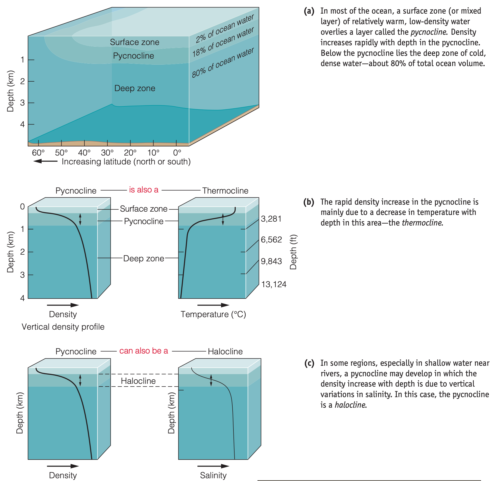
Figure 1: 海洋密度分層示意圖。
2.2. 海流運動時所受之驅動力
表面海水可被風推動，深層海水則可受重力推動。海水一旦流動後，將受固體邊界、科氏力以及壓力梯度力等之控制。
2.2.1. 科氏力 (Coriolis force)
地面上的物體隨地球旋轉，如物體相對於地面能保持靜止不動，表示物體之切線速度係與地表一致。地表之切線速度隨緯度而遞減，故物體向北運動時其原有之切線速度大於新抵地點者，因此運動時將向東偏。反之則向西偏。物體向東運動時，其切線速度亦大於當地所有值，其平衡位置應在南方，故物體將向南偏。反之則往北偏。綜合而言，在北半球，因地球自西向東旋轉之故，物體運動時將感受一股向右的偏向力，如圖 2 所示。此力稱為科氏力 (Coriolis force)，係旋轉系統下特有之假想力。
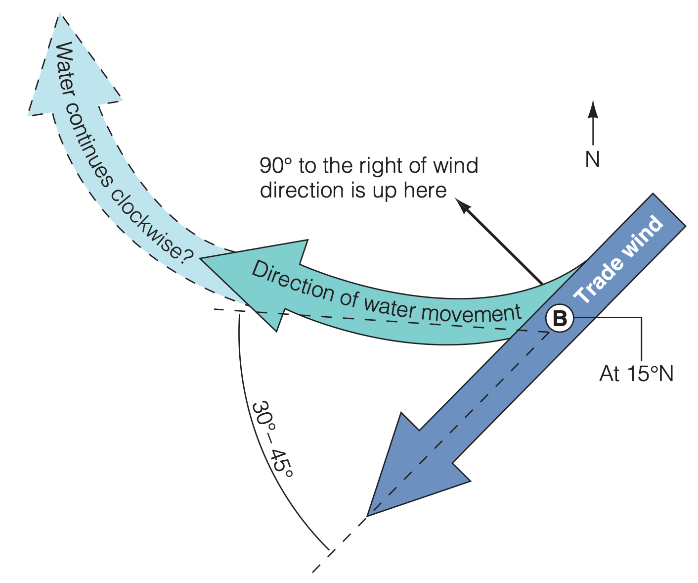
Figure 2: 北半球之科氏力作用。
2.2.2. 艾克曼螺旋 (Ekman Spiral)
當風吹掠洋面時，風對海面就施加了一股順風向的拖曳力 (風應力，Wind stress)，將造成表層海水流動，海水流動時又產生科氏力，因此流向會偏向風向之右側。上層水流動時又會拖曳下方流體運動，而下層流向又再稍偏右。如此一層牽引一層，水流流向由水面向下呈現螺線型態之旋轉構造，此種構造即稱為艾克曼螺旋。當流況達到平衡狀態時，此時風應力係與科氏力相平衡，即二力大小相等但方向相反，如此則表示海面下各層海流平均（或總流量）係流往風向之右側（北半球，南半球為向左），這個現象稱為艾克曼效應，如圖 3，而此流量則稱為艾克曼搬運 (Ekman transport)。
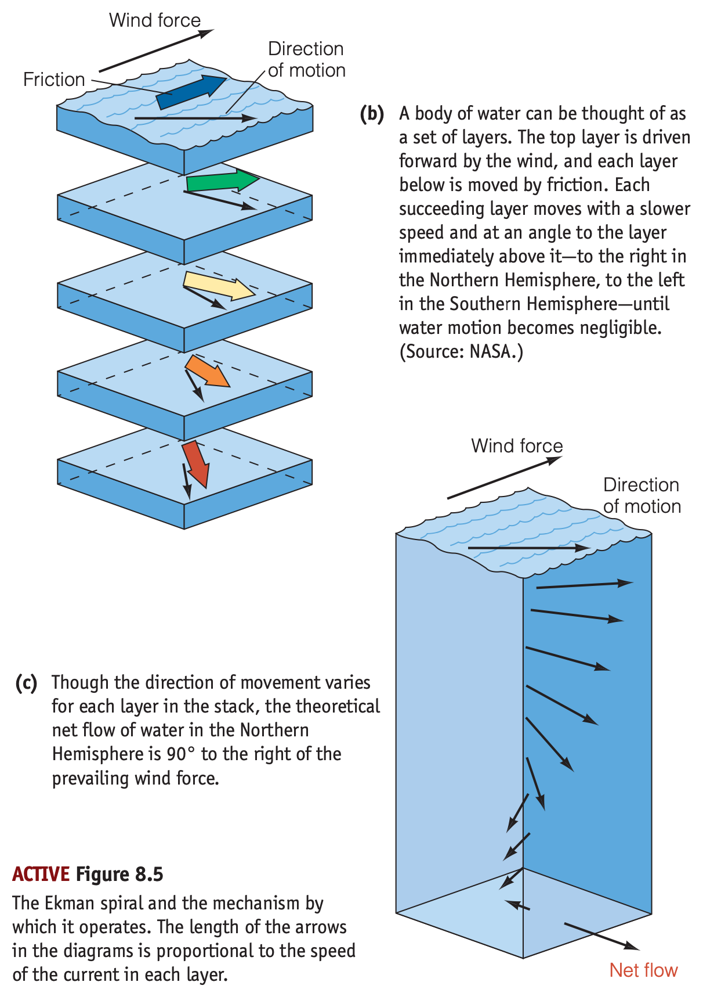
Figure 3: 艾克曼螺旋。
2.2.3. 壓力梯度力 (Pressure gradient force)
如果流體質點處身於壓力分佈不均勻之處，那麼流體質點便會感受到同樣的這種壓力梯度力，這股力的作用方向為由高壓指向低壓，其大小則與壓力梯度呈正比，所以稱為壓力梯度力。這個作用力也可以推動水流運動。相鄰的水柱如果密度的垂直構造不一樣，那麼水柱的重量不同也會產生壓力梯度力。
2.2.4. 科氏力與壓力梯度力之交互作用
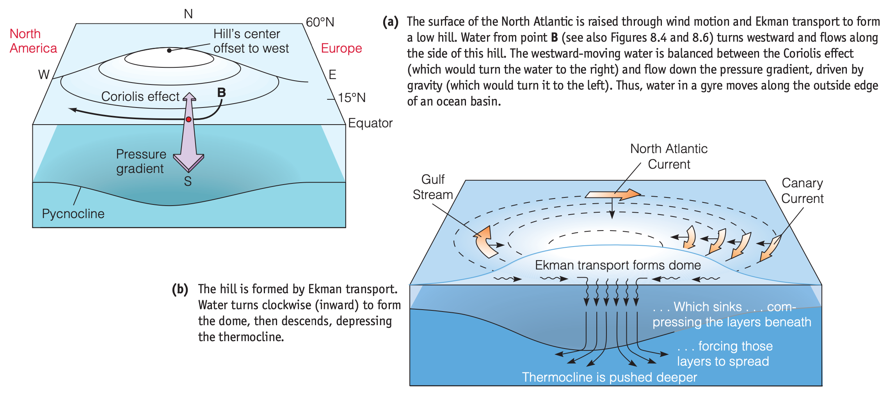
Figure 4: 科氏力與壓力梯度力之交互作用。
如圖 4，如果有某種原因造成某處海平面相對比較高，那麼在水面下某一水平面上的壓力分佈便不均勻，因此就有水平的壓力梯度力，後者將推動水質點由高壓向低壓方向加速流動﹔但水一流動後科氏力便立即作用並促使流向偏右，最後當科氐力與壓力梯度力抵銷(二者大小相等但方向相反，此時合力為零，稱為地轉平衡)，水流即不再加速運動，水流方向與壓力梯度力方向垂直(北半球面隨流向高壓在右)，科氐力與壓力梯度力二者相平衡的這種海流就稱為地轉流。
經由艾克曼效應可以促成海面抬升或下降。例如氣旋型風場所造成之厄克曼搬運均為離心方向，因此氣旋中心處水位會較低同時必需要有下層海水流向上層來補充，這就是湧升流 (Upwelling)。同理，沿岸地區在沿岸風向適當時也會形成湧升流。湧升流之反義字即為沉降流 (Downwelling)，如圖 5。
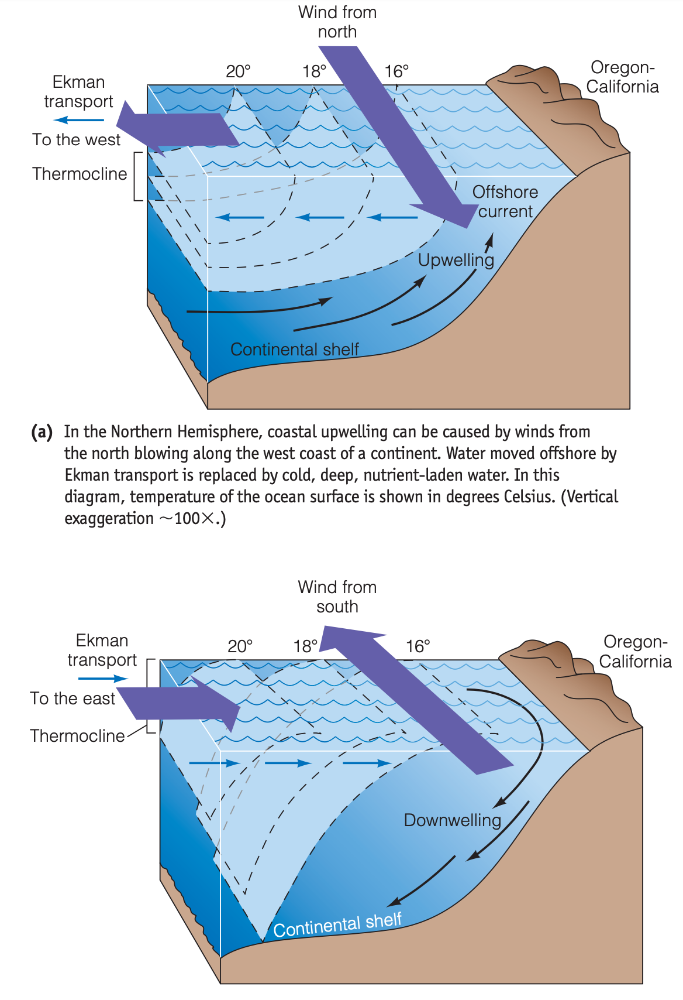
Figure 5: 湧升流與沉降流。
2.3. 全球主要環流系統
世界海洋有六條大洋流迴路，北半球兩條，南半球有四條（圖 6）。五個是地轉流：北大西洋環流、南大西洋環流、北太平洋環流、南太平洋環流和印度洋環流。第六個也是最大的洋流稱為西風漂流 (West Wind Drift)，或所謂的南極繞極流 (Antarctic Circumpolar Current, ACC)。雖然它是一個迴路，但在技術上不是環流，因為其不會圍繞海洋盆地的外圍流動。在強大的、幾乎無休止的西風的推動下，無休止地圍繞南極洲向東流動。
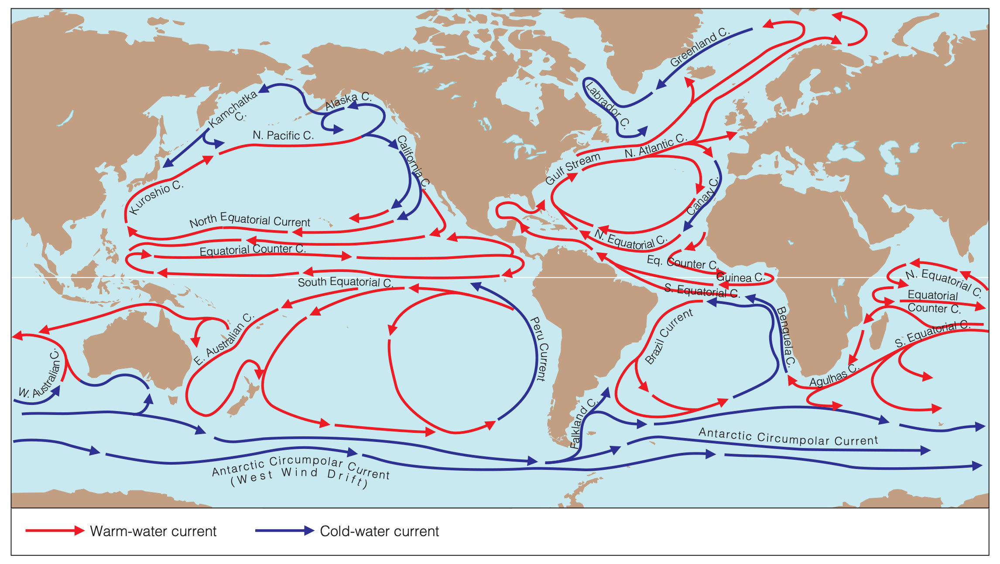
Figure 6: 全球環流系統。
2.4. 溫鹽海流 (Thermohaline Currents)
前面介紹的地表水流影響著世界海洋的上層（約佔其體積的 10%），但水平和垂直洋流也存在於海洋深層水域的頂層以下。密度差異 (而不是風能) 驅動很深的水緩慢地迴流。由於密度在很大程度上是水溫和鹽度的函數，因此由於密度差異造成之水的運動被稱為溫鹽環流 (thermohaline circulation)。整個海洋都參與了緩慢的溫鹽環流，進行海水的大規模垂直運動和全球性的海洋環流。 圖 7 為理想化的溫鹽環流示意圖。
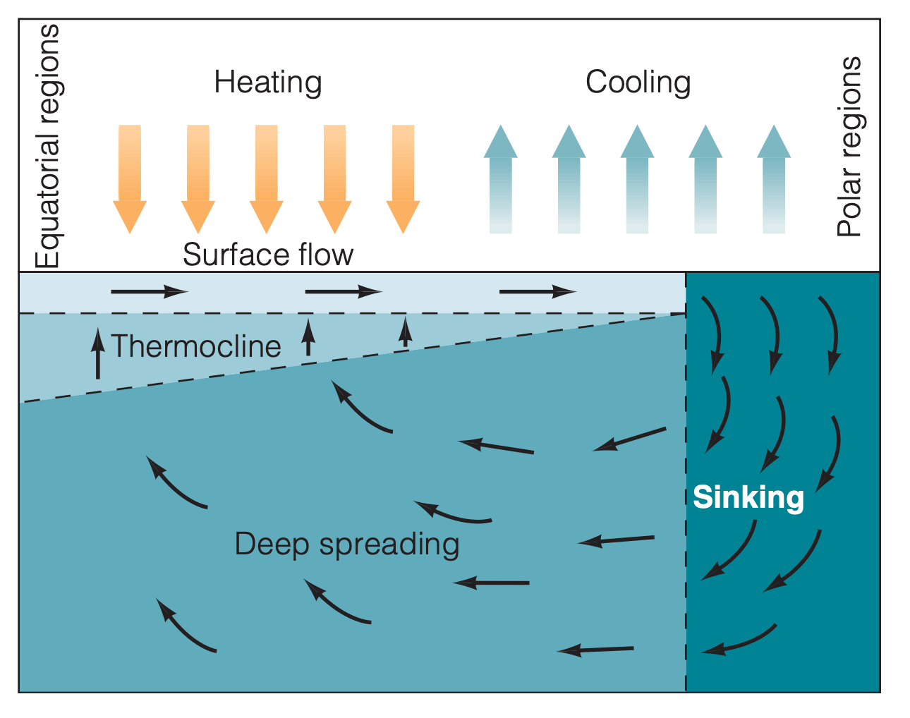
Figure 7: 理想的溫鹽環流示意圖。
2.5. 溫鹽流和表面洋流：全球熱循環
將熱帶水輸送到極地地區是全球熱輸送帶的一部分。圖 8 顯示了全球迴路的簡化輪廓，這是三十年集中努力理解深層迴流的成果。這種緩慢的環流橫跨半球，疊加在表面環流中更快的水流上。最近對這個全球迴路的分析表明，一些熱加溫了歐洲海岸後，進入印度尼西亞和澳大利亞附近的海洋，前往印度洋，並透過環繞非洲南端的阿古拉斯洋流進入墨西哥灣流。離開太平洋的地表水部分是由整個太平洋的超滲降雨和河川水流造成的。輸送帶中緩慢、穩定、三維的水流分佈溶解的氣體和固體，混合營養物質，並在海洋盆地之間輸送生物的幼年階段。
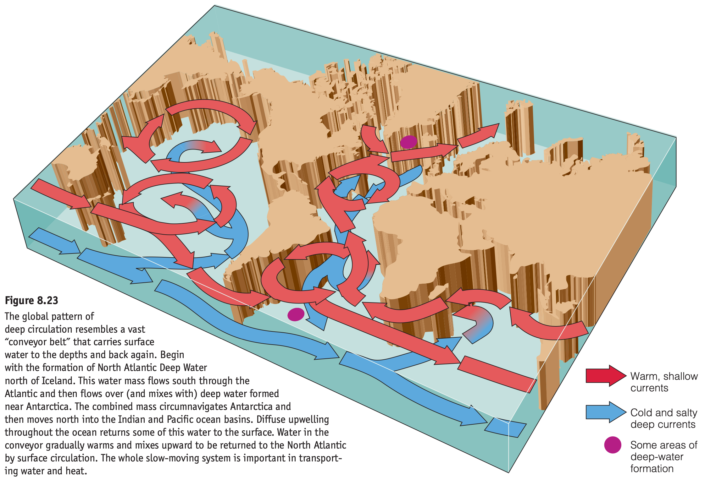
Figure 8: 全球性的深層迴圈類似於巨大的 ``輸送帶''，承載表面的水流到深處。
3. 波浪
3.1. 波浪在海面上傳輸能量
對大多數人來說，深水中的海浪似乎是一個巨大的移動物體—一個穿越海面的水脊。波浪是幾種波之一，所有這些波都是由能量從來源透過某種介質（固體、液體或氣體）移動引起的擾動。當擾動的能量傳播時，傳遞的介質會以特定方式移動。有時，這種運動對我們來說是可以是介質中的波峰或突起。移動的波峰產生了我們在波浪中看到的運動現象。在海浪中，能量帶以波浪的速度移動，但水則不是。從某種意義上說，波浪是一種錯視。波浪與其中的水粒子運動如圖 9 所示。
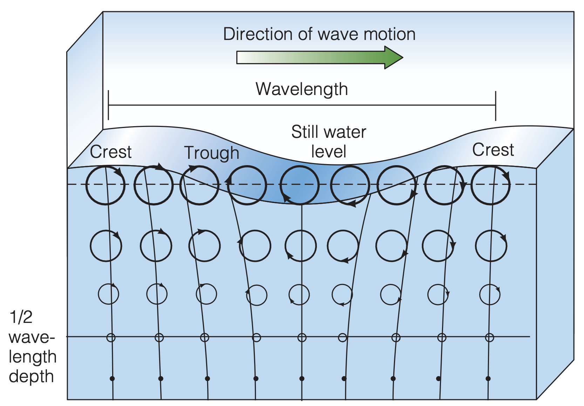
Figure 9: 波浪與其中的水粒子運動。
3.2. 波浪因擾動力而生成
導致海浪形成的能量被稱為擾動力 (disturbing force)。風吹過海洋表面，為表面張力波和風浪提供了擾動的力量。風暴潮或地震海浪到達封閉的港口或海灣，或大氣壓力的突然變化，是被稱為 "盪漾" (seiche）的水共振搖晃的擾動力量。與地震相關的山體滑坡、火山爆發和海底斷層是地震海浪（也稱為海嘯）的擾亂力量。潮汐的擾動力量是地球、月亮和太陽之間引力的大小和方向的變化，加上地球的自轉。圖 10 總結了這些波的特徵。
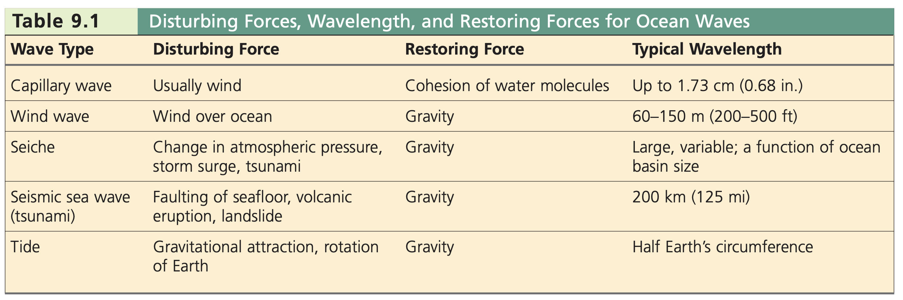
Figure 10: 海浪的擾動力、波長和恢復力。
3.3. 波浪因恢復力而衰減
在水面形成波浪後，恢復力 (restoring force) 使水面恢復到平坦。如果波的恢復力迅速並完全達成目的，受擾的海面就會變得平穩，波的能量將作為熱量消散。但這不是真實的情況。波動在形成後將持續，因為恢復力將過度補償並導致持續振盪。這種情況類似於加重量在非常靈敏的彈簧底部，彈簧將不斷地上下晃動而超過其正常的停止點。
非常小的水波 (波長小於 1.73 cm) 的恢復力是分子凝聚力 (即表面張力)。所有波長大於 1.73 cm 的波主要取決於重力來提供恢復力。重力將波峰向下拉動，而水的慣性再讓波峰向下變成波谷。這些較大的波稱為重力水波。由於波浪中水分子的圓形運動幾乎是無摩擦的，重力水波可以穿越數千英里的海洋表面而不消失，最終在遙遠的海岸上破碎。
3.4. 使用波長來量測波浪大小
3.5. 風吹過海面而產生波浪
風波是由風能轉移到水中形成的重力波。大多數風浪不到 3 m 高。60 m 至 150 m 的波長在開放海域中最為常見。
風波是由表面張力波開始成長。表面張力波是微小的漣漪，讓海面不再光滑，並導致風的一些能量轉移到水中，以推動表面張力波峰向前移動。風會在微小波峰的下風處產生小尺度渦流，讓該處的氣壓稍微變小。大氣壓力將拖曳波峰向前（順風）推向低壓槽，為水面增加更多的能量。水面增加的能量向風的方向擴張了水粒子的圓形軌道，故增加了小漣漪的尺寸。當表面張力波的波長超過 1.73 cm 時就變成風波，即重力取代表面張力作用而成為主導之恢復力。
若風波位於深度超過其波長的一半的水中，而風繼續吹，波就會變大。它的頂峰向更快的風推進，從移動的空氣中提取更多的能量。水粒子在波中的圓形軌道隨著能量輸入的增加而變大；波高、波長和週期會自行增加。在風波形成區中具有不規則的波峰的水波被稱為海 (sea)；紛亂的水面是由許多波長、週期和波高的風波同時存在所形成的。當風減慢或停止時，或是水波通過風暴區之後，水波的波峰將會變得圓潤和規律。如果波浪的陡度 (steepness) 超過 1:7 的比例和 \(120^{\circ}\) 的角度，其頂部將被吹掉形成錐形或白帽。在這種情況下，風能將作為熱量消散，而無助於重力波的生長。風浪的生成過程如圖 12 所示。
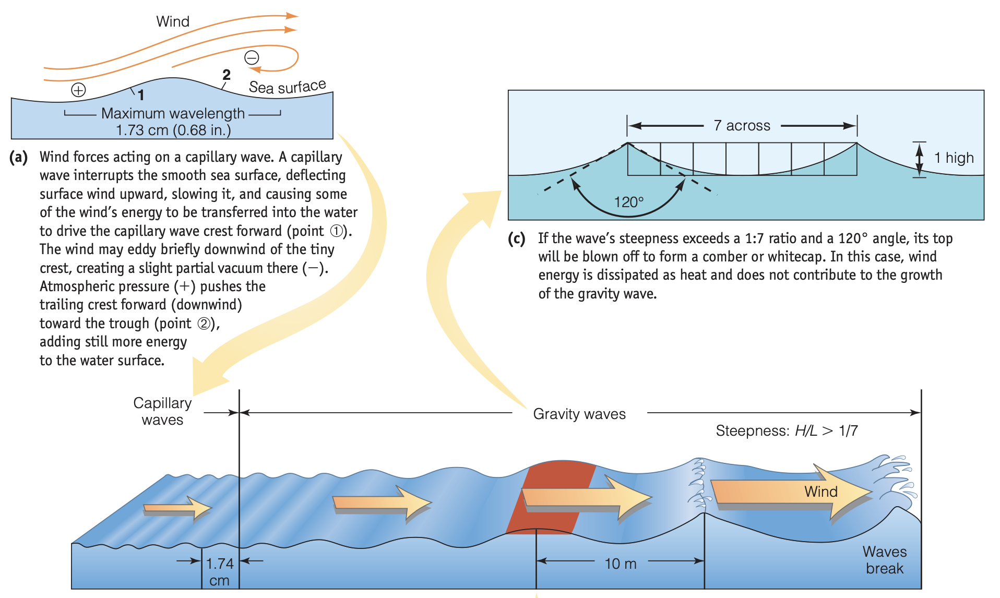
Figure 12: 風浪的生成過程。
3.6. 有限水域之蕩漾
侷限於小空間（如桶、浴缸或海灣）的水受到擾動時，會以特定的共振頻率來回晃動。頻率會隨著不同的水量或容器的大小與形狀而變化。如果將一個淺容器的水（如冰塊盤）從一個地方帶到另一個地方，則請注意不要以共振頻率移動托盤，以避免溢出。將托盤放在桌面上後，大多數水的隨機運動會迅速穩定下來，但如在共振頻率下，托盤中的水可能會輕輕搖晃幾秒鐘。此搖晃便是蕩漾 (seiche)。
如圖 13a, 蕩漾是湖泊或海洋盆地中的長波，從盆地的一端來回流向另一端。晃動頻率取決於盆地的長度。在節點處，水為側向移動，不會上升或下降。圖 13b 為北美伊利湖的蕩漾水位記錄。2003 年 11 月的強西風，導致從湖西端的 Toledo 到東端的水牛城的水位差異超過 4 米。
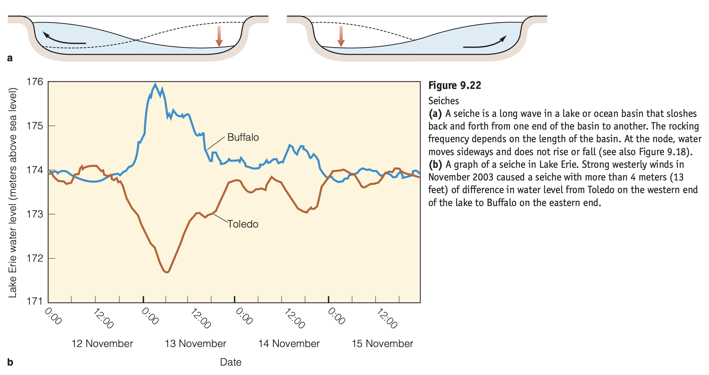
Figure 13: 蕩漾 (seiche)。
3.7. 海水位移產生之海嘯
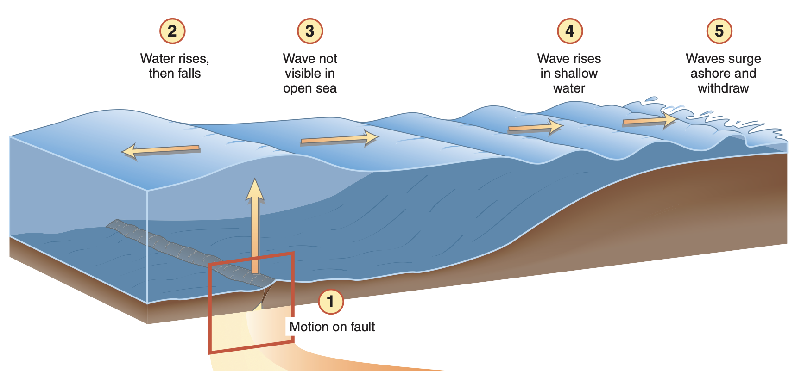
Figure 14: 海嘯生成示意圖。
如圖 14，由海水快速位移引起的長波長之淺水前進波被稱為海嘯 tsunami (津波)，這是一個日本術語，意即「港邊的波浪」。地球沿著斷層突然垂直移動（與導致地球地震的力相同）引起的海嘯的正式學名為地震海浪 (seismic sea waves)。海嘯也可能由山體滑坡、冰川墜落的冰山、火山爆發、小行星撞擊和水面的其他直接位移引起。請注意，所有地震海浪都是海嘯，但並非所有海嘯都是地震海浪。
如圖 15，2004 年 12 月 26 日的印度洋大海嘯 (即南亞海嘯) 肇始於沿板塊破裂處掀起之海面。波浪以每秒 212 m（每小時 763 公里）的速度向外移動。以這種速度，到達最近的蘇門答臘海岸只需要大約 15 分鐘，到印尼的班達亞齊市只需要 28 分鐘。
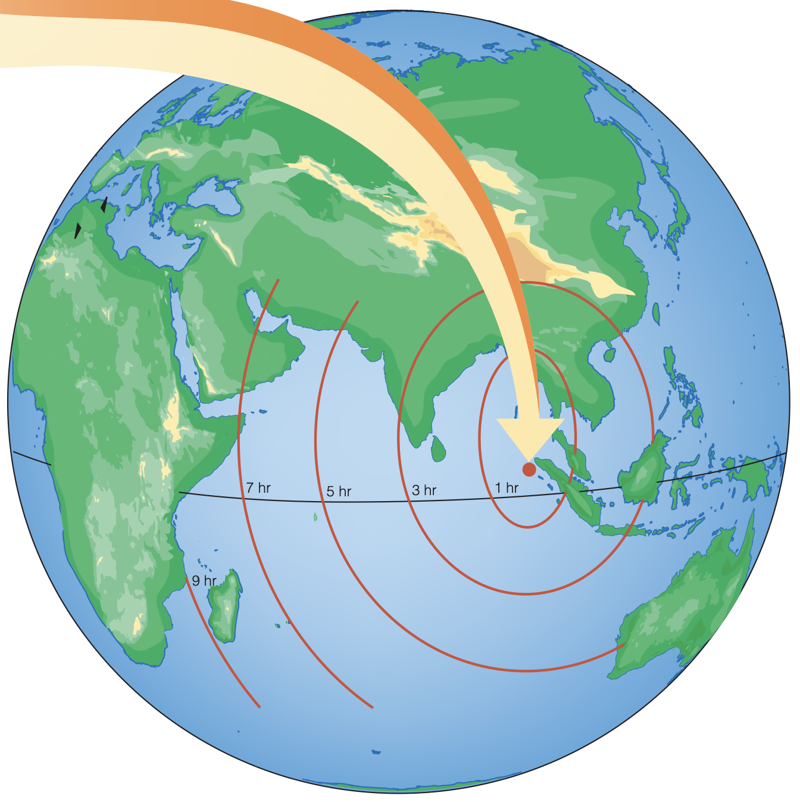
Figure 15: 2004 年南亞海嘯傳播時間。
4. 潮汐
4.1. 潮汐是最長的水波
潮汐是海洋表面高度的週期性變化，由月球和太陽的引力與地球的移動相結合所引起。潮汐的波長相當於地球周長的一半，是所有波中最長的。與我們遇到的其他波浪不同，這些巨大的淺水波永遠不會擺脫導致它們的力量—因此被稱為強制波 (forced waves)。風波、盪漾和海嘯形成後是自由波 (free waves)，也就是說，它們不再被創造它們的力量所作用，也不需要保持力來保持它們的運動。
大約公元前 300 年希臘航海家和探險家 Pytheas 首先提到月球的位置和潮汐高度之間的關聯。但等到牛頓完成引力的分析後，人們方對潮汐有充分理解。 艾薩克·牛頓（Isaac Newton）在傑出的《自然哲學與數學原理》（1687 年）一書中描述了行星、衛星和引力場中所有其他物體的運動。 牛頓的核心發現之一是，兩個物體之間的重力與物體的質量成正比，但與它們之間距離的平方成反比。 這意味著較重的物體比輕的物體更強烈地相互吸引，並且隨著它們之間的距離的增加，引力會迅速減弱。
雖然潮汐的主要原因是月球和太陽對海洋的引力，但實際產生潮汐的力量與從地球中心到潮汐生成物體（月球或太陽）中心距離的三次方成反比。因此在這種關係中，距離甚至更重要。太陽的質量大約是月球的 2700 萬倍，但太陽的距離大約是月球的 387 倍，所以太陽對潮汐的影響只有月球的一半左右。
4.2. 潮汐是由重力和慣性所形成的強制波
牛頓提出的潮汐平衡原理 (equilibrium theory of tides) 可用以穩定軌道讓行星圍繞太陽或月球圍繞地球之力平衡和影響來解釋許多海洋潮汐特徵。平衡原理假設海底不會影響潮汐，而海洋會因影響其表面位置的力量而立即反應；因此，海洋表面始終因在它上的作用力而處於平衡狀態。
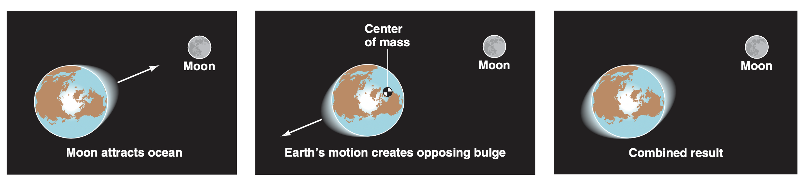
Figure 16: 月球引致之潮汐。
首先由一簡化的模型討論月球引致的潮汐。如圖 16 所示，月球的引力吸引著海洋朝向它產生一個隆起。而地球圍繞著地球-月球系統之質心的運動，產生的慣性力在地球與月球相對的一側產生了一個另一個隆起。這兩個效應的組合產生了兩個潮汐隆起。
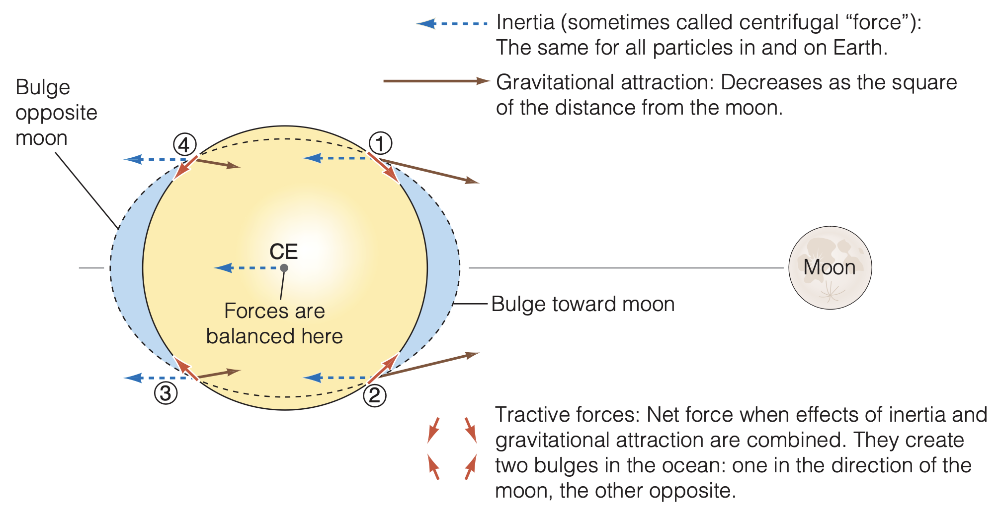
Figure 17: 地球上的慣性力與月球引力。
圖 17 進一步解釋了重力和慣性對地球上五個不同的地點之影響。月球對地球的引力隨著與月球距離的平方而減少，而地球運動的慣性力 (即離心力) 則在地球上各處都是一樣的。在第 1 和第 2 點，月球的引力略微超過慣性向外移動的趨勢；力的不平衡導致水沿著地球表面移動，在某一點向月球收斂。在第 3 和第 4 點，慣性超過了重力，因此水沿著地球表面移動，在月球對面的點收斂。力只在地球中心（CE 點）平衡。
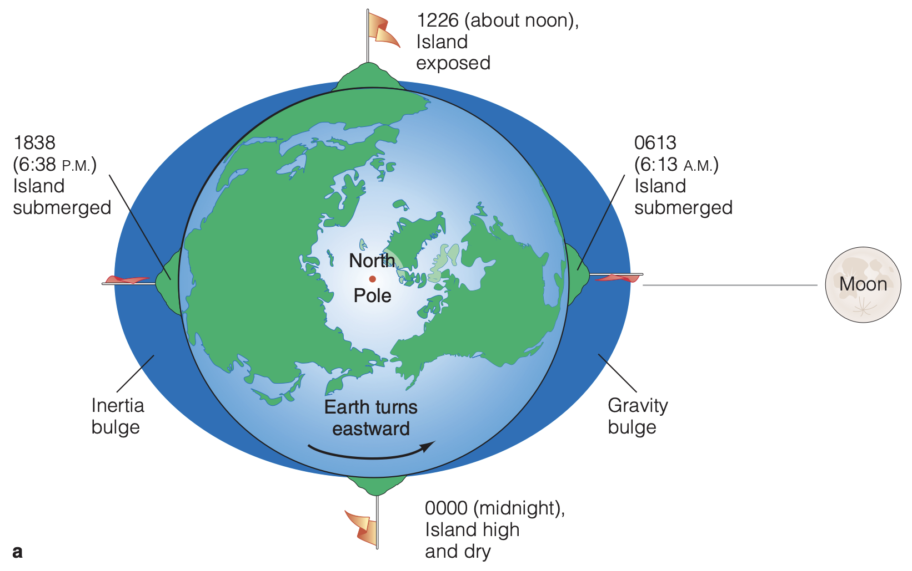
Figure 18: 地球自轉引致的潮汐。
圖 18 說明了地球下自轉引致的潮汐隆起是如何產生的。此為理想化的平衡模型，觀察以北極為軸的地球自轉，並假設地球圍繞其軸旋轉時，潮汐隆起與月球保持對齊。由於地球自轉週期為 24 小時，但月亮每天晚起 50 分鐘，故月球引致的潮汐週期為 24 小時 50 分。在圖 18 中的小島觀測到的潮汐水位如圖 19 所示，由於一個週期內有兩次隆起，故約半日 (12 小時 25 分) 有一次漲退潮，一般稱為半日潮。
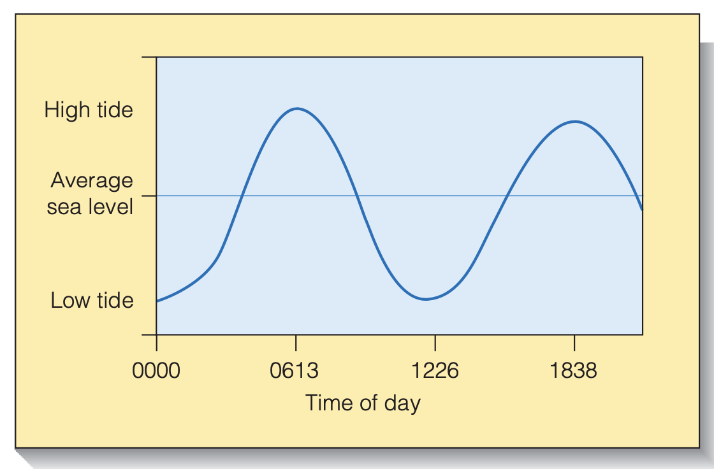
Figure 19: 小島上觀測到的潮汐水位。
另一個複雜的影響來自於月球不會停留在赤道上方，如圖 20。每個月，月球都會從地球赤道上方 \(28 \tfrac{1}{2}^{\circ}\) 的位置移動到赤道以下 \(28 \tfrac{1}{2}^{\circ}\) 之處。當月球在赤道上、下方時，隆起會相應偏移。當月球在赤道以北 \(28 \tfrac{1}{2}^{\circ}\) 時，赤道以北的島嶼將穿過地球一側的隆起，但會錯過另一側的隆起。一天之內，該島將經歷一次非常高的漲潮與退潮，以及一次較低的漲潮和退潮。
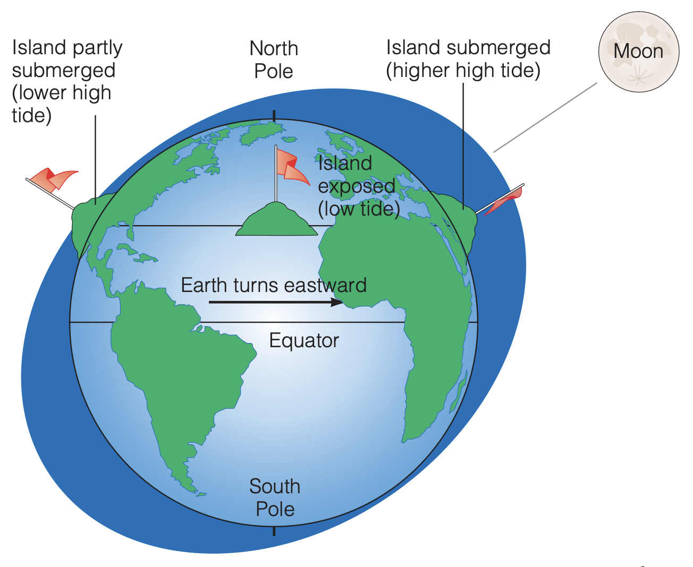
Figure 20: 月球位置的影響。
4.3. 太陽與月球的共同影響
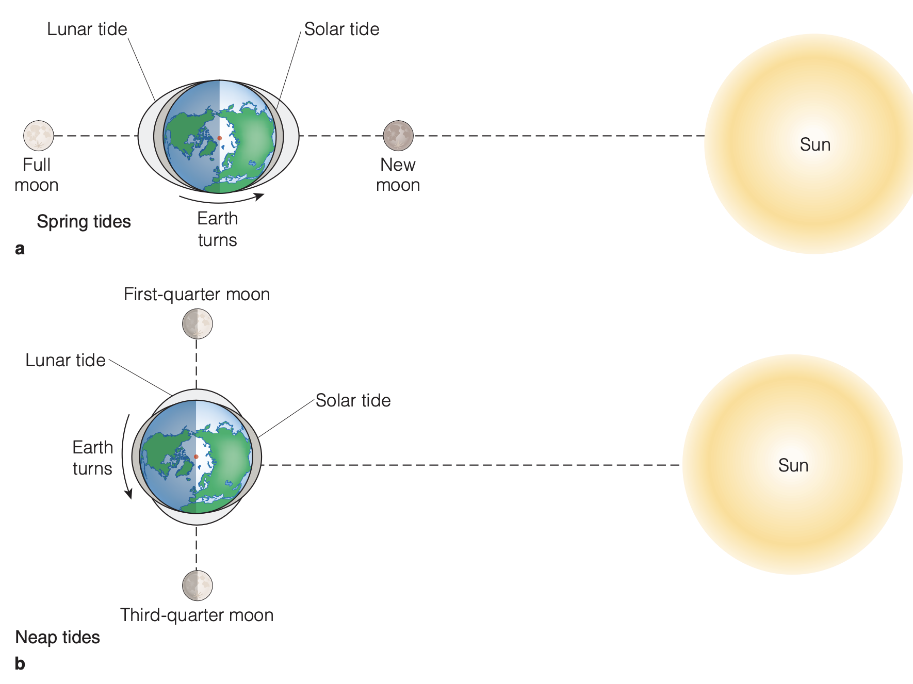
Figure 21: 太陽與月球對潮汐的影響。
太陽的引力當然亦會影響潮汐。圖 21 所示為大潮 (spring tide) 和小潮 (neap tide) 時之太陽、月亮和地球的相對位置。(a) 在新月和滿月時，太陽潮和月潮相互加強，故產生具有最高漲潮位和最低退潮位的大潮。 (b) 在上弦與下弦月時，太陽、地球和月亮形成直角，故形成具有最低漲潮位和最高退潮位的小潮。 由紐約與澳洲阿德萊德港之一個月份的潮汐觀測資料，可以看出大潮與小潮的水位變化，如圖 22。
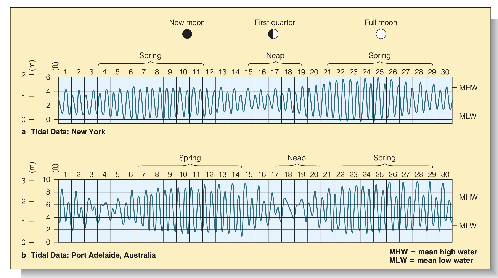
Figure 22: 紐約與澳洲阿德萊德港之潮汐觀測資料。
由地球運動慣性以及太陽和月亮的引力引起的潮汐被稱為天文潮。然而，風暴亦會影響潮汐高度—這種現象被稱為氣象潮。拉普拉斯 (Pierre-Simon Laplace) 在 1775 年首次提出的潮汐動力理論 (dynamic theory of tides)，延伸了牛頓的天體力學，增加了對流體運動效應的基本理解。潮汐動力理論可解釋基於牛頓模型的預測與潮汐觀測行為之間的差異。